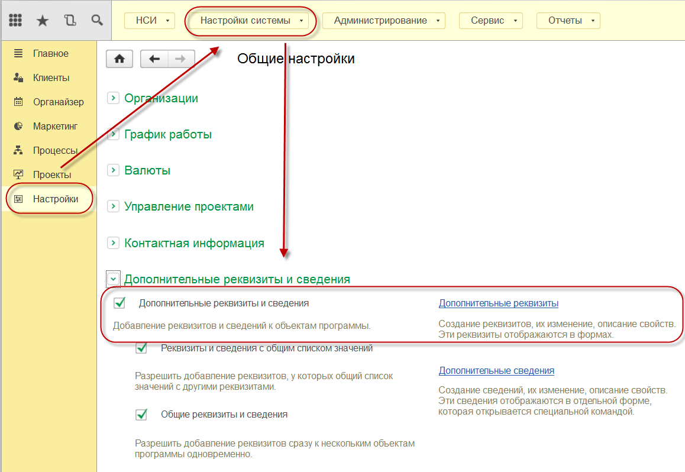
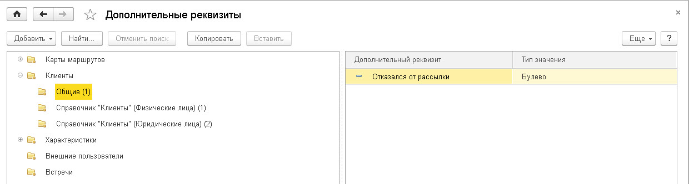
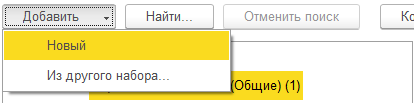
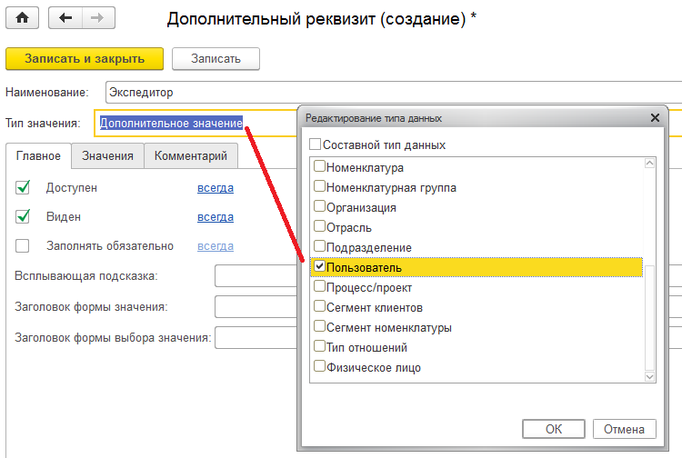
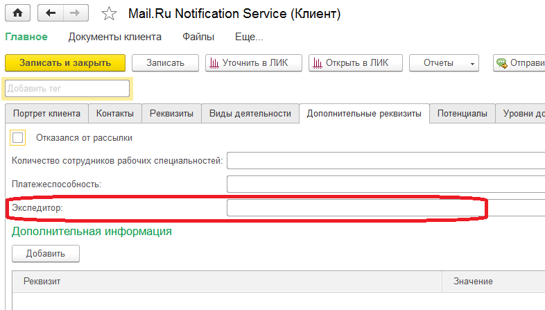
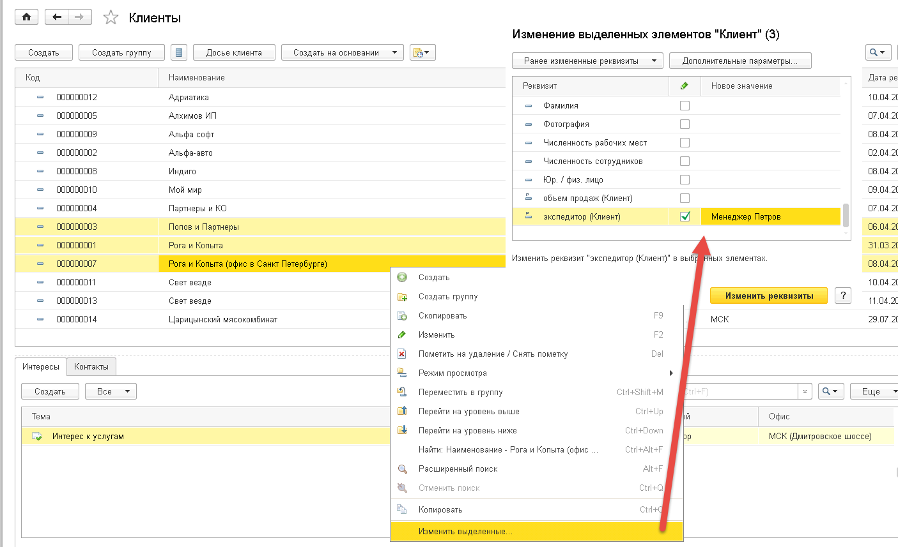
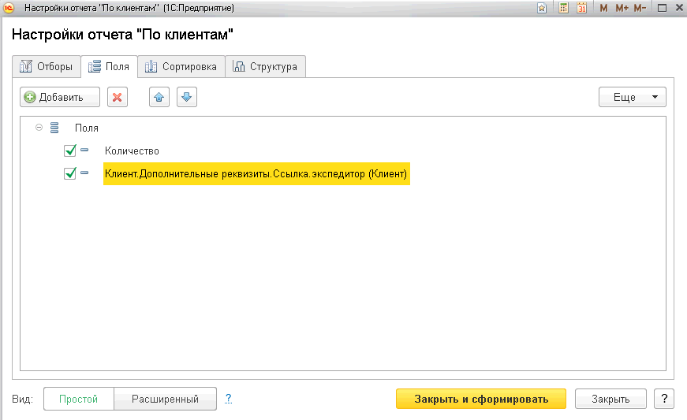
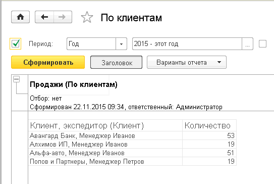

Чтобы начать работу по использованию дополнительных реквизитов в карточке Клиента необходимо в настройках конфигурации включить возможность использования данного механизма. Для этого в панели разделов перейдем в раздел «Настройки» - «Настройка системы», выберем команду «Общие настройки» и в группе «Дополнительные реквизиты и сведения» проставим галочку «Дополнительные реквизиты и сведения».
Далее, чтобы открыть форму создания дополнительного реквизита, необходимо перейти по ссылке «Дополнительные реквизиты».

В открывшемся окне отображается список документов и справочников, для которых возможно добавление дополнительных реквизитов.
Перейдем к описанию создания дополнительного реквизита:

Встанем на необходимый справочник или документ (не группу), например справочник «Клиенты» и нажмем кнопку «Добавить».

Варианты создания: "Новый" - создает новый дополнительный реквизит в указанном наборе, "Из другого набора..." - позволяет скопировать существующий реквизит из другого набора или включить его текущий набор.
Выбираем "Новый"
В окне создания дополнительного реквизита необходимо указать Наименование и выбрать «Тип значения» (в нашем случае «Пользователь»). Сохранить и закрыть форму.

После этого в карточке клиента на вкладке «Дополнительные реквизиты», появляется дополнительный реквизит Экспедитор.

Теперь необходимо для всех клиентов указать Экспедитора.
В Конфигурации предусмотрено групповое изменение объектов конфигурации, что значительно облегчает заполнение реквизитов. Выберем несколько элементов справочника «Клиенты». С помощью правой кнопки мыши вызовем контекстное меню, в котором выберем пункт «Изменить выделенные элементы». Откроется форма группового изменения реквизитов справочника, в том числе и дополнительных.

Найдем созданный реквизит «Экспедитор» и присвоим необходимое значение. Нажмем кнопку «Изменить» и данное значение будет присвоено всем выделенным элементам справочника.
Теперь можно получать данные о продажах экспедиторов.
Откроем отчет Продажи (По клиентам).
В Настройках отчета на закладке «Поля» добавляем дополнительный реквизит «Экспедитор» и формируем отчет.


Проанализировав информацию выше можно увидеть, кто из экспедиторов выполнил больший или меньший объем продаж.